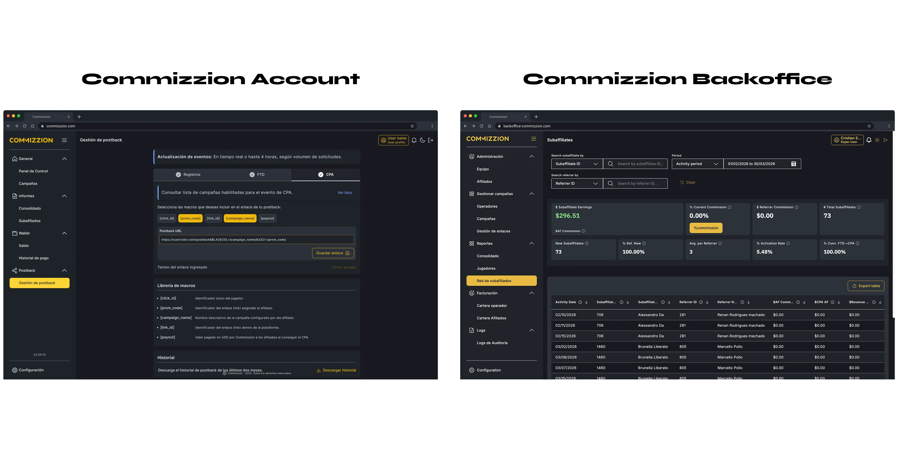
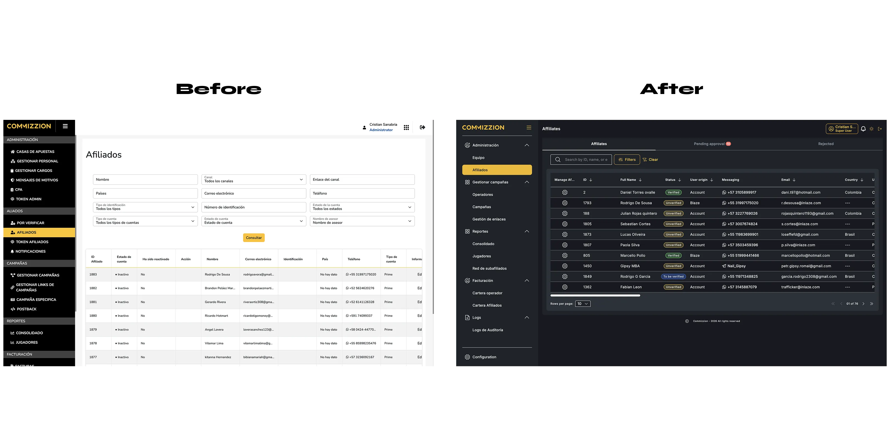
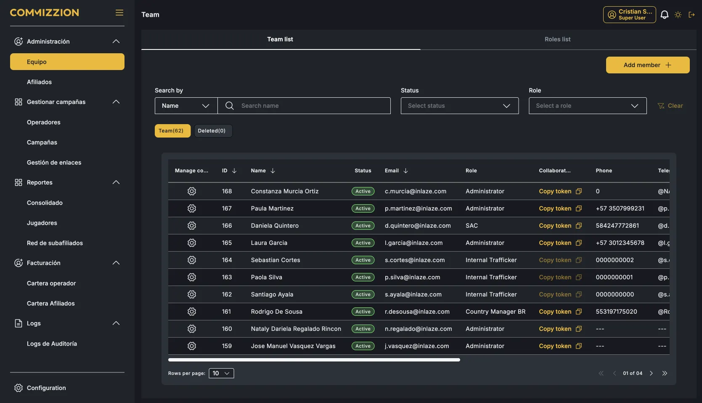
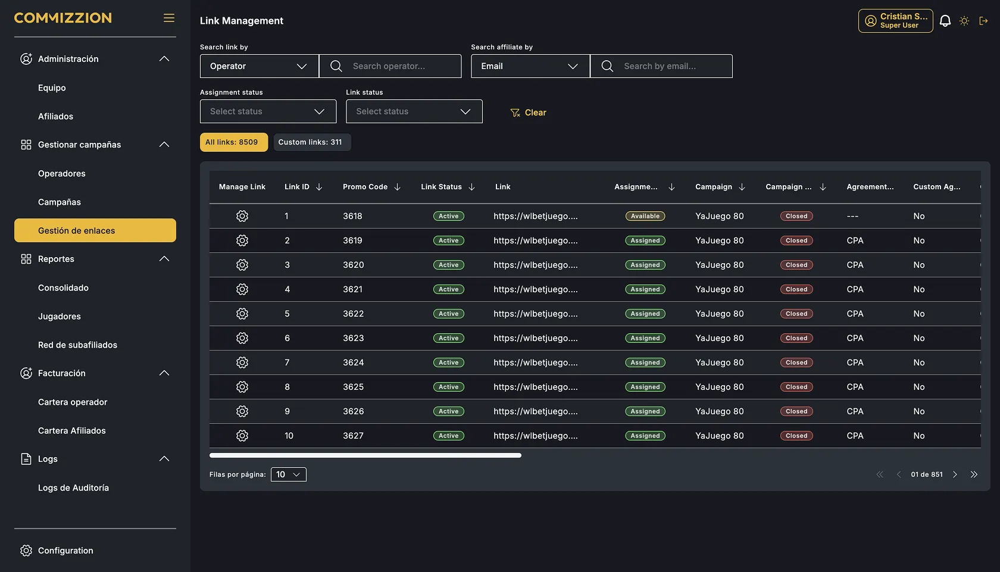
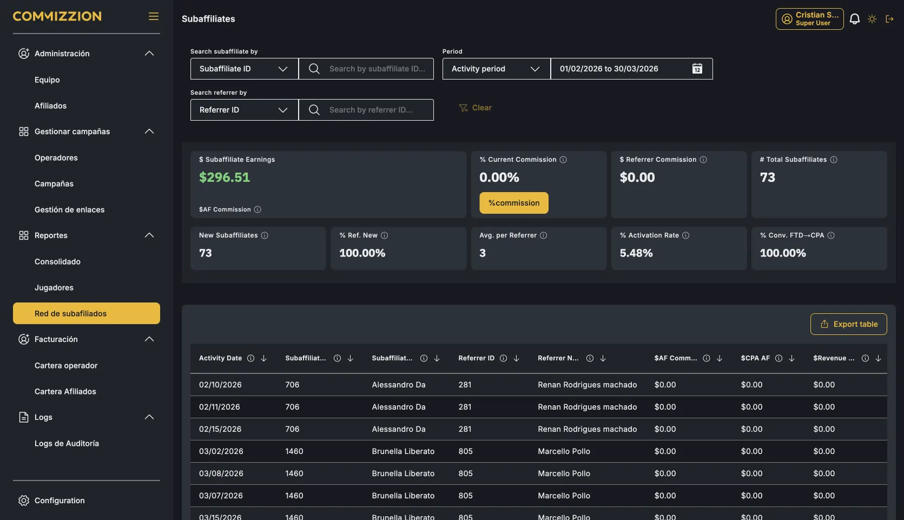
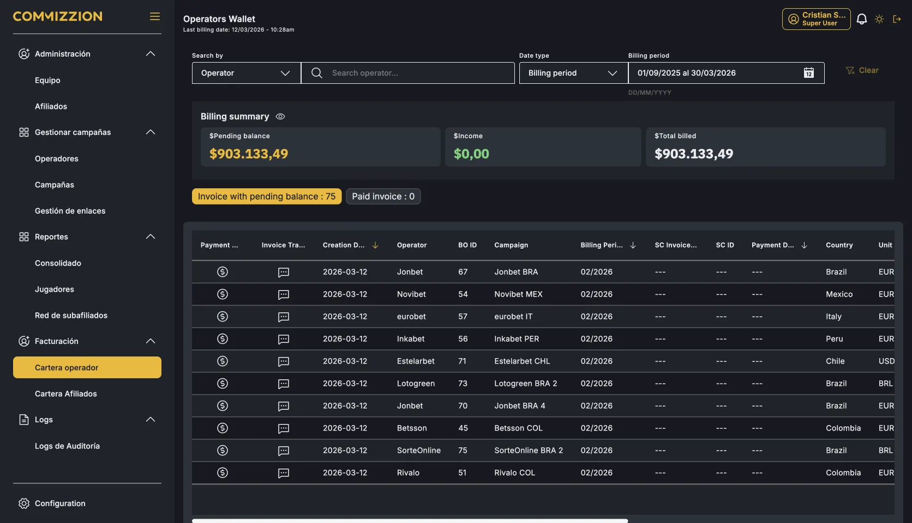

The admin platform was so complex only 2 people could operate it. Every operational change required a development ticket, blocking production for hours. The redesign started with the architecture — not the interface — and delivered a platform the entire team could operate independently.
Sitemap restructure before touching UI
Before designing a single screen, the navigation was audited and reorganized. The old platform had 22 flat items without hierarchy. The redesign created 6 logical groups with two-level structure, eliminating ambiguity about where to find anything.
Look & feel inherited from Account DS
No visual exploration from scratch. The Backoffice adopted the Unified C4 Design System built for Commizzion Account — same components, same tokens. Cross-platform consistency at zero exploration cost.

Affiliate management as self-service
Approving, editing, and updating affiliate status previously required a development ticket for every change. The redesigned module gives the operations team full control — status changes, document verification, and account management without touching code.





"A platform's complexity isn't solved by better screens — it's solved by better architecture."
"Inheriting a design system isn't a shortcut. It's a strategic decision that pays compound interest."